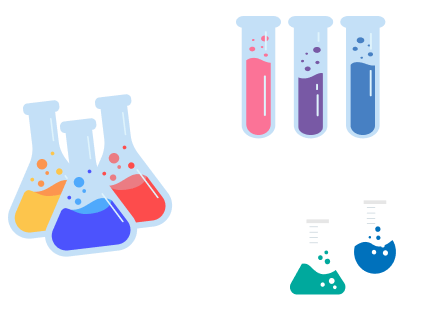
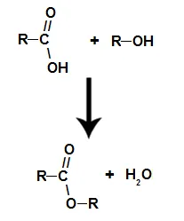

Reação de Esterificação
Propriedades físico-químicas
1. Estado físico: Os ésteres frequentemente se apresentam como líquidos incolores, voláteis e com aromas agradáveis. Alguns podem ser sólidos.2. Ponto de ebulição e fusão: Geralmente têm pontos de ebulição mais baixos do que os ácidos carboxílicos correspondentes.
3. Solubilidade: São geralmente solúveis em solventes orgânicos, como éter e acetona, mas menos solúveis em água.
4. Reação de esterificação: Formação de ésteres a partir de ácidos carboxílicos e álcoois na presença de um ácido como catalisador.
5. Hidrólise: Ésteres podem sofrer hidrólise ácida ou básica, resultando na quebra da ligação éster para regenerar o ácido carboxílico e o álcool.
6. Aromatização: Muitos ésteres contribuem para aromas e sabores agradáveis em frutas e outros produtos..
7. Reações de transesterificação: Troca dos grupos alquila em ésteres quando expostos a outros álcoois, comum na produção de biodiesel.
8. Redução: Ésteres podem ser reduzidos a álcoois pela ação de agentes redutores.